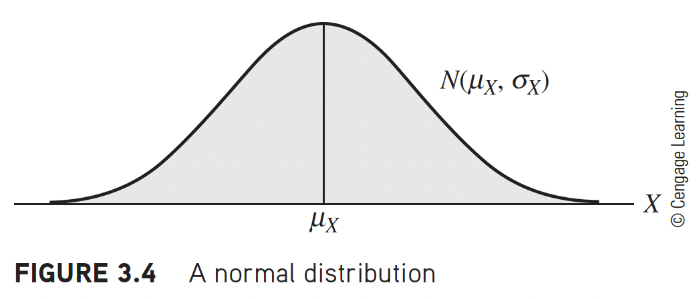
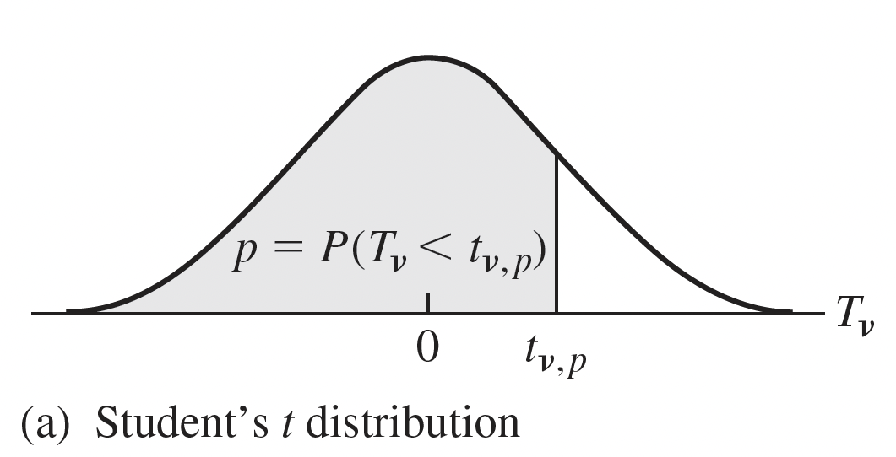
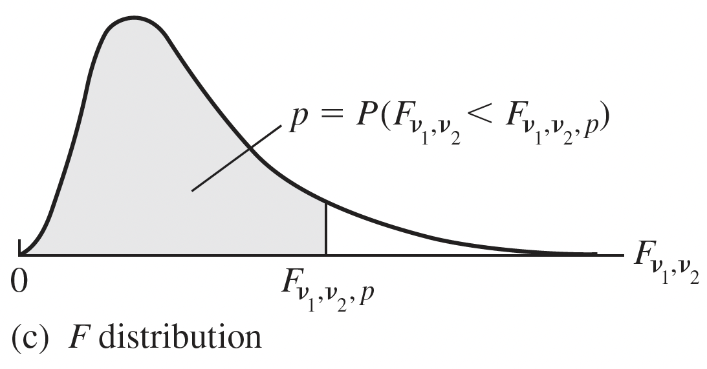
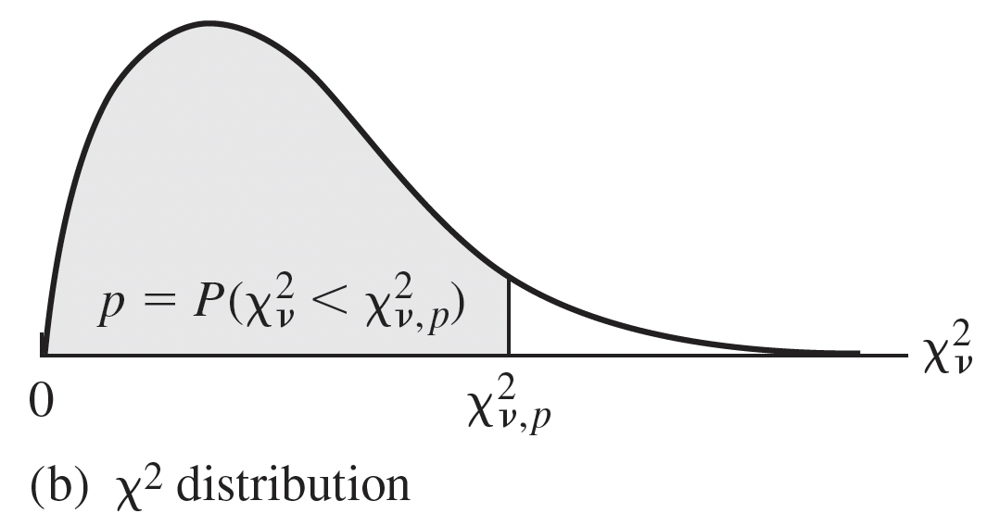
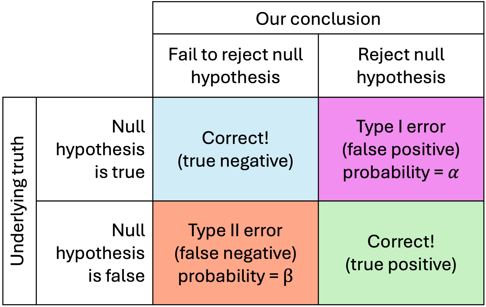
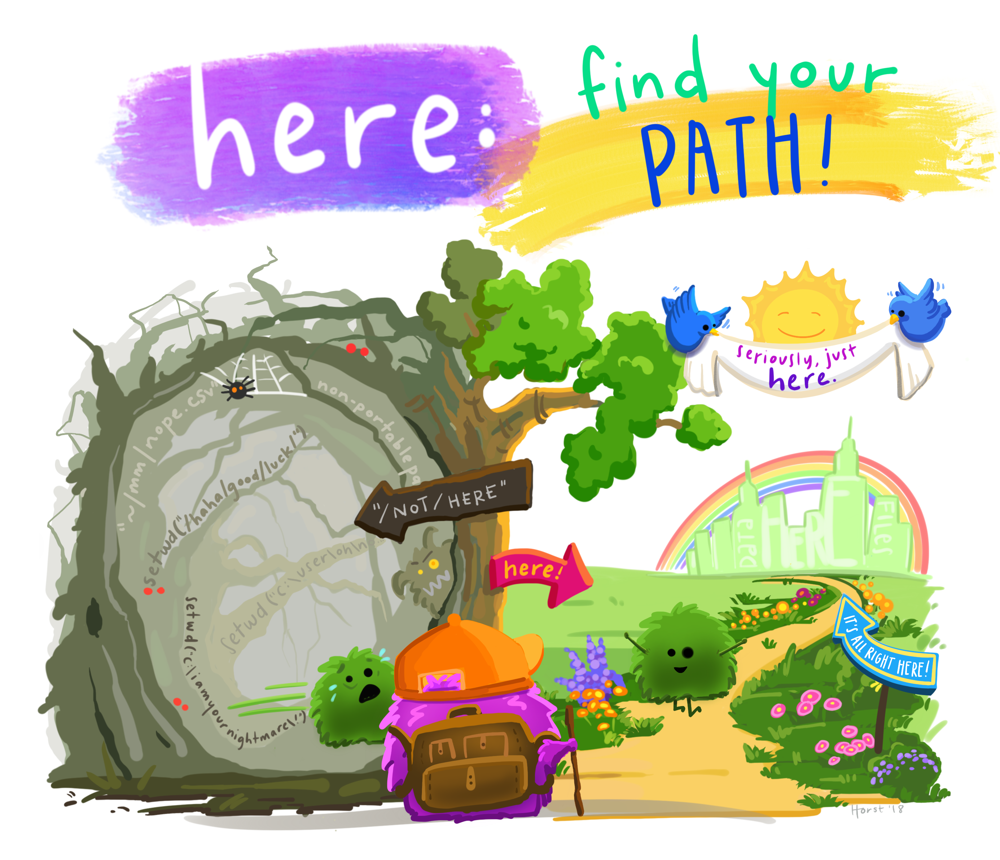
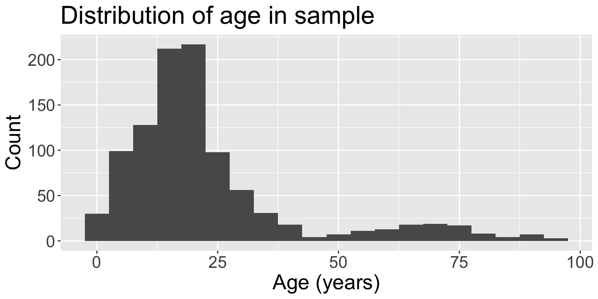
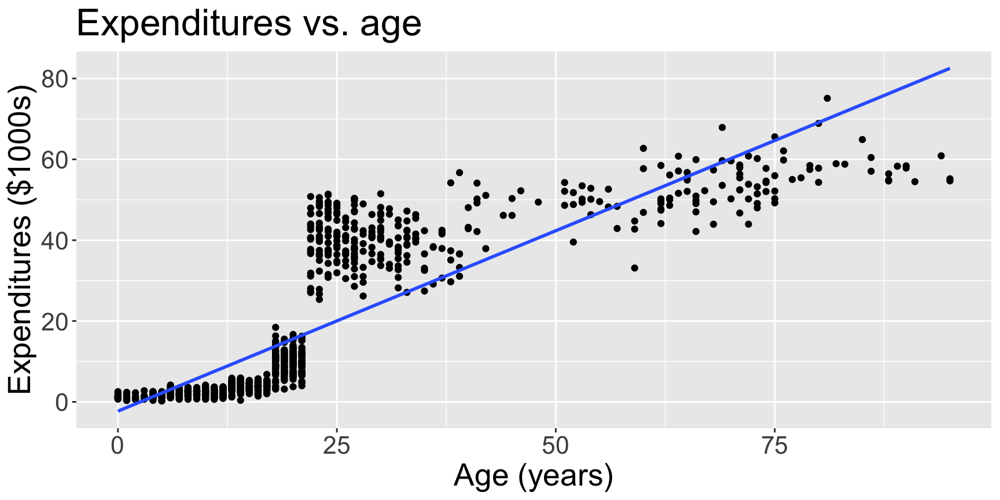

[1] 2.262157What we need from 511 and the R tools for this class
2027-01-04
Recognize the tools from 511/611 that we will keep using in 512/612
Set up a class folder and R project, and load data with here()
Use the core R functions we will need for homework and labs
Set up a class folder and R project, and load data with here()
Use the core R functions we will need for homework and labs
| Continuous Outcome | Categorical Outcome | |
|---|---|---|
| Continuous Exposure | Correlation, simple linear regression | ?? |
| Categorical Exposure | t-tests, paired t-tests, 2 sample t-tests, ANOVA | proportion test, Chi-squared goodness of fit test, Fisher’s Exact test, Chi-squared test of independence, etc. |
Those tests cannot handle more complicated data
Regression lets us handle many variables at once, but it is built from the same pieces you learned in 511
| From 511/611 | Where we will use it in 512/612 |
|---|---|
| Mean, SD, histograms, scatterplots | Exploring our data before fitting any model (every lab!) |
| Correlation | Simple linear regression (Lesson 3) |
| Normal distribution | Assumption about the errors in our model (Lesson 7) |
| t distribution | Tests and CIs for a single coefficient, \(\beta\) (Lesson 4) |
| F distribution / ANOVA | ANOVA table and F-tests to compare models (Lessons 6 and 10) |
| Confidence intervals, hypothesis tests | Inference for our coefficients (all quarter) |
| Type I error and power | Testing many coefficients, model selection (Lessons 13 and 14) |
Normal: \(Y\sim N(\mu,\sigma^2)\)
Student’s t: \(T \sim t_{df}\)
F: \(F \sim F_{df_1, df_2}\)
Chi-squared: \(X \sim \chi^2_{df}\)




p function (probability) and a q function (quantile, or critical value)| Distribution | Probability: \(P(X \leq x)\) | Critical value |
|---|---|---|
| Normal | pnorm(x, mean, sd) |
qnorm(p, mean, sd) |
| t | pt(x, df) |
qt(p, df) |
| F | pf(x, df1, df2) |
qf(p, df1, df2) |
| Chi-squared | pchisq(x, df) |
qchisq(p, df) |
lower.tail = FALSE instead of 1 - ... if you preferCheck the assumptions
Set the level of significance \(\alpha\)
Specify the null ( \(H_0\) ) and alternative ( \(H_A\) ) hypotheses
Calculate the test statistic
Calculate the p-value
Write a conclusion in the context of the problem
These are the same steps we will use in 512! The only change is that our parameter will be a regression coefficient (like \(\beta_1\)) instead of a mean ( \(\mu\) )
t.test()Is the population mean body temperature different from 98.6°F?
\(H_0: \mu = 98.6\) vs. \(H_A: \mu \neq 98.6\), with \(\alpha = 0.05\)
| estimate | statistic | p.value | parameter | conf.low | conf.high | method | alternative |
|---|---|---|---|---|---|---|---|
| 98.24923 | -5.454823 | 2.410632e-07 | 129 | 98.122 | 98.37646 | One Sample t-test | two.sided |
Conclusion: We reject the null hypothesis. The average body temperature was 98.25°F (95% CI 98.12, 98.38°F), which is discernibly different from 98.6°F ( \(p\)-value < 0.001).
t.test(x = grp1, y = grp2, var.equal = TRUE)
Type I error ( \(\alpha\) ): we reject \(H_0\), but \(H_0\) is true
Power ( \(1-\beta\) ): we correctly reject \(H_0\)
This will matter when we run many tests on one model
here()Make one folder for our class, like BSTA_512_W27
Inside it, I suggest:
DataHomeworkLessonsProject (with Code, Data_Raw, Data_Processed, and Reports folders)Naming tips:
01_, 02_)_ instead of spacesA project tells R where “home” is for our work
In RStudio: File → New Project... → Existing Directory → choose your BSTA_512_W27 folder
Open the .Rproj file whenever you work on this class
Only make one project for now! You will use it for homework and labs
here packageA .qmd file looks for files starting in its own folder
Data folder!here() always starts at the folder with your .Rproj file

here()| Function | Data file type | Package needed |
|---|---|---|
read_excel() |
.xls, .xlsx |
readxl |
read.csv() |
.csv |
Built in |
load() |
.rda, .Rdata |
Built in |
read_sas() |
.sas7bdat |
haven |
Recognize the tools from 511/611 that we will keep using in 512/612
Set up a class folder and R project, and load data with here()
%>%I want to find my keys, then start my car, then drive to work, then park my car.
|>, which works the same way for our purposesglimpse(): look at your data firstdds.discr dataset (from 511!) for examplesRows: 1,000
Columns: 6
$ id <int> 10210, 10409, 10486, 10538, 10568, 10690, 10711, 10778, 1…
$ age.cohort <fct> 13-17, 22-50, 0-5, 18-21, 13-17, 13-17, 13-17, 13-17, 13-…
$ age <int> 17, 37, 3, 19, 13, 15, 13, 17, 14, 13, 13, 14, 15, 17, 20…
$ gender <fct> Female, Male, Male, Female, Male, Female, Female, Male, F…
$ expenditures <int> 2113, 41924, 1454, 6400, 4412, 4566, 3915, 3873, 5021, 28…
$ ethnicity <fct> White not Hispanic, White not Hispanic, Hispanic, Hispani…rename() and mutate(): change and create variablesRows: 1,000
Columns: 8
$ id <int> 10210, 10409, 10486, 10538, 10568, 10690, 10711, 10778, 1…
$ age.cohort <fct> 13-17, 22-50, 0-5, 18-21, 13-17, 13-17, 13-17, 13-17, 13-…
$ age <int> 17, 37, 3, 19, 13, 15, 13, 17, 14, 13, 13, 14, 15, 17, 20…
$ sex <fct> Female, Male, Male, Female, Male, Female, Female, Male, F…
$ expenditures <int> 2113, 41924, 1454, 6400, 4412, 4566, 3915, 3873, 5021, 28…
$ R_E <fct> White not Hispanic, White not Hispanic, Hispanic, Hispani…
$ exp_1000 <dbl> 2.113, 41.924, 1.454, 6.400, 4.412, 4.566, 3.915, 3.873, …
$ age_sq <dbl> 289, 1369, 9, 361, 169, 225, 169, 289, 196, 169, 169, 196…case_match(): give numeric codes their category namesIn mtcars, am is 0 for automatic and 1 for manual. I want a variable with those names.
am transmission
Mazda RX4 1 manual
Mazda RX4 Wag 1 manual
Datsun 710 1 manual
Hornet 4 Drive 0 automaticAlways make a new variable name so you keep the original
For conditions (like age > 50), use case_when() instead
fct_relevel(): choose the reference categoryWhen we put categorical variables in a model, one category is the reference
[1] "Female" "Male" [1] "Male" "Female"filter(), select(), and drop_na()filter() keeps rows that match a condition
drop_na() removes rows with missing values
tbl_summary(): make a “Table 1”From the gtsummary package
You will need this for your labs and poster!
| Characteristic | N = 1,0001 |
|---|---|
| Age | 23 (18) |
| Sex | |
| Male | 497 (50%) |
| Female | 503 (50%) |
| Race/Ethnicity | |
| American Indian | 4 (0.4%) |
| Asian | 129 (13%) |
| Black | 59 (5.9%) |
| Hispanic | 376 (38%) |
| Multi Race | 26 (2.6%) |
| Native Hawaiian | 3 (0.3%) |
| Other | 2 (0.2%) |
| White not Hispanic | 401 (40%) |
| Expenditures | 18,066 (19,543) |
| 1 Mean (SD); n (%) | |
ggplot(): one variable
ggplot(): two variables (a sneak peek at regression!)
| Function | Package | What it does |
|---|---|---|
here() |
here |
Builds file paths from your project folder |
read_excel(), read.csv(), load() |
readxl, base |
Loads data |
glimpse() |
dplyr |
Quick look at variables and types |
rename(), mutate() |
dplyr |
Rename and create variables |
case_match(), case_when() |
dplyr |
Recode values into categories |
fct_relevel() |
forcats |
Set the reference category |
filter(), select(), drop_na() |
dplyr, tidyr |
Keep rows, keep columns, drop missing |
tbl_summary() |
gtsummary |
Table 1 |
ggplot() |
ggplot2 |
Plots |
pnorm(), qt(), t.test() |
base | Probabilities, critical values, t-tests |
lm() and tidy() to fit and look at regression modelsMore dplyr functions (you’ll need this for HW 1!)
Meike’s BSTA 511 page and Nicky’s EPI 525 page to review 511 topics
Meike’s R programming class (BSTA 526) for more R practice
Basic Quarto set up: see the R recordings in OneDrive and my EPI 525 site
Don’t forget to go online and fill it out!
I look forward to the quarter with you!
Lesson 1: Review